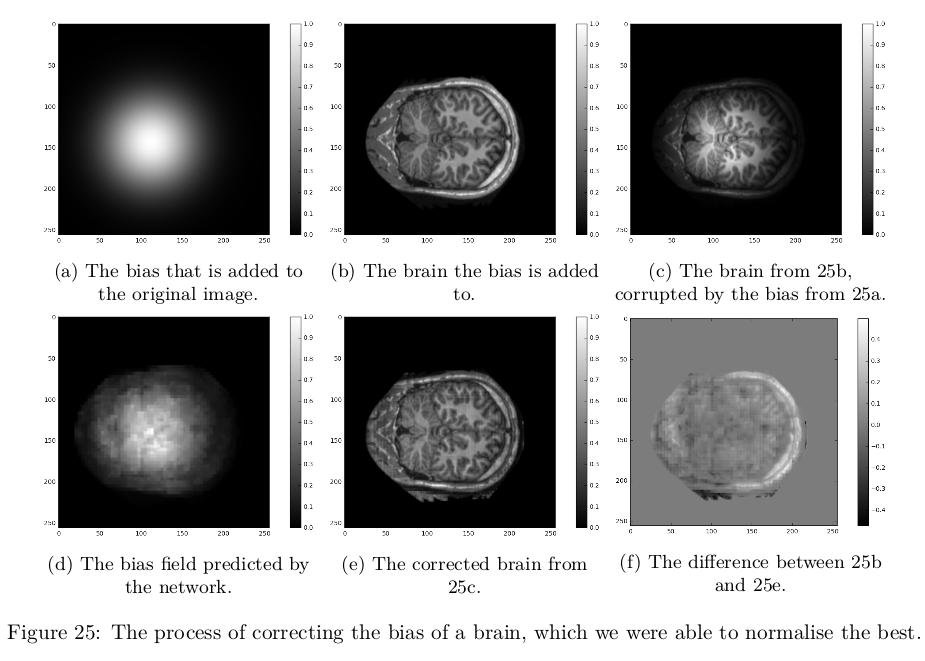

The effect of different amounts of threads in asynchronous methods for deep reinforcement learning
Abstract
In this paper we present the effects of asynchronous training in Deep Reinforcement Learning methods. An Actor-Critic method using eligibility traces has been implemented to solve the CartPole problem, and the Asynchronous Advantage Actor-Critic (A3C) algorithm, have been implemented to solve both the CartPole problem and to play Atari games. The results from the A3C method show it is possible to achieve an increase of 631,27\% in the number of performed actions for several Atari games, while maintaining the same stability in learning as a single-threaded approach. However, when the A3C algorithm was applied to the CartPole problem we only achieved a speed-up of 15,09% in time spent training. The results indicated that the advantages of asynchronous learning are only present, when each thread can perform a meaningful amount of work between each asynchronous update.
The project is available here.
Normalisation of T1 Brain Images using Deep Learning
Abstract
When a brain is scanned by an MRI machine, the image can be corrupted by a low-frequency signal, that can alter some of the pixel values - a so-called bias field signal[Kur+05]. Al- gorithms that depend on precise pixels values in images can, therefore, produce misleading results. Thus, before image processing algorithms can be used with satisfactory results, a pre-processing step is required. In this project we investigate the possibility of removing the bias field signal using a deep learning approach.
Conservative Safe Manufacturing of Cable Driven Soft Robotsusing Geometrical Constraints on Designed Shapes
Abstract
We present an empirically derived geometric feasibility model formanufacturing cable driven soft silicone robots using a single cast molding process. Through structured experiments and observations, we inductively designed a mathematical model based on direct geometric measurements of a boundary representation of a soft robot design. Further, we demonstrate how the feasibility testing is incorporated into modeling with constructive solid geometry (CSG) operations to verify design robustness before 3D printing molds for casting soft robots. The simplicity of geometric - position-based - constraints for a design verification model provides us with a finite dimensional parameter space linked to a low number of CSG parameters. Future work may exploit our low-number parametric position-based approach in combination with position-based dynamics to yield fast simulations for exploring the design space prior to manufacturing.
pynetworkred
Description
A software package implementing Python bindings for the C++ code implemented for the Real-Time Thevenin Impedance Computation by Stefan Horst Sommer . The software package enables fast sparse-matrix operations using SuiteSparse , and contains implementations for computing Thevenin impedances of systems in Python.
For more information, see pynetworkred's documentation page.